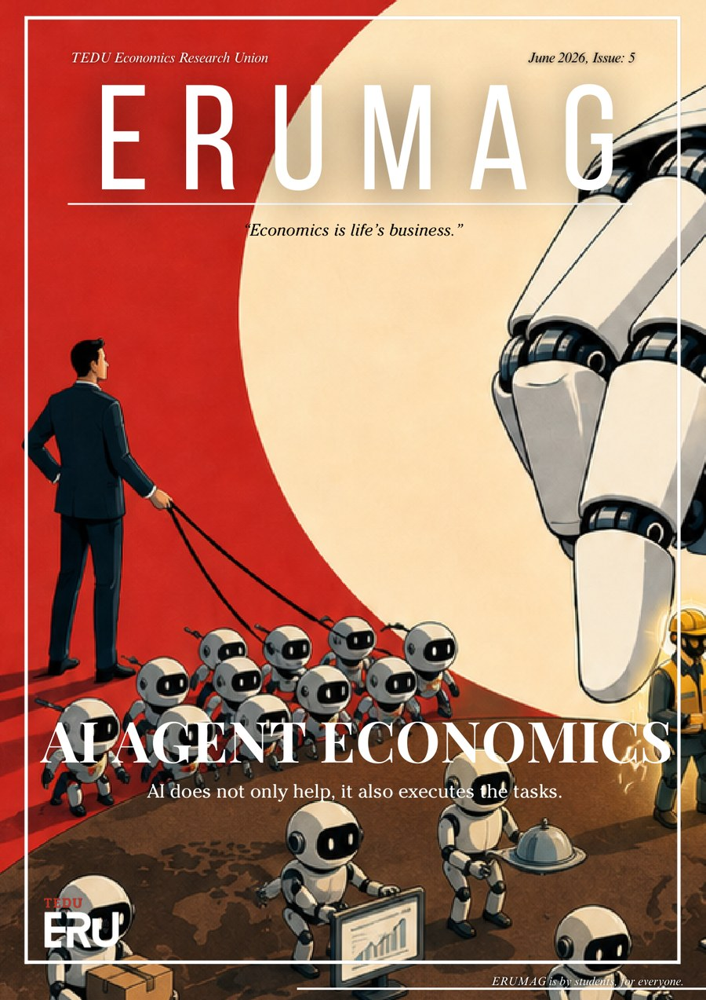

Issue 5 · 2026 · Latest
AI agent economics: the labour market, big tech, human capital and Anthropic's workforce data, with interviews featuring Prof. Dr. Cilasun and Asst. Prof. Arda Gitmez.

13 articles
Read each one on its own page, with an AI summary and charts.
In This Issue
Jun 15, 2026 · Article · 4 min
AI reshapes labor through substitution and complementarity, raising risks to income and job meaning.
Read articleJun 15, 2026 · Article · 3 min
Big tech companies use AI to orchestrate entire economies and automate labor at scale.
Read articleJun 15, 2026 · Article · 7 min
Generative AI expands professional capability while risking cognitive decline and knowledge collapse.
Read articleJun 15, 2026 · Article · 8 min
AI agents automate cognitive judgment at scale, demanding institutional redesign and raising questions about control.
Read articleJun 15, 2026 · Article · 8 min
AI agents reshape work at the task level with mixed labor market effects and rising automation.
Read articleJun 15, 2026 · Article · 6 min
How AI agents are reshaping finance and enterprise, with Claude emerging as the dominant agentic LLM.
Read articleJun 15, 2026 · Article · 6 min
Economists embrace machine learning for prediction, causal inference, and solving complex models.
Read articleJun 15, 2026 · Article · 6 min
Does the Euro serve all EU members equally? Examining currency flexibility, sovereignty, and resilience across Europe.
Read articleJun 15, 2026 · Article · 5 min
Research reveals why workers can't truly compensate for long commutes, despite economic theory's predictions.
Read articleJun 15, 2026 · Article · 4 min
High-speed rail, subways, and highways boost R&D innovation through knowledge spillovers and cost reduction.
Read articleJun 15, 2026 · Interview · 9 min
Prof. Cilasun on how AI will reshape labor markets, deepen inequality, and demand urgent policy action.
Read interviewJun 15, 2026 · Article · 6 min
How Schacht's shadow banking illusion masked Nazi Germany's economic bankruptcy.
Read articleJun 15, 2026 · Interview · 8 min
Political economy meets technology: how institutions, media, and AI reshape society and progress.
Read interview